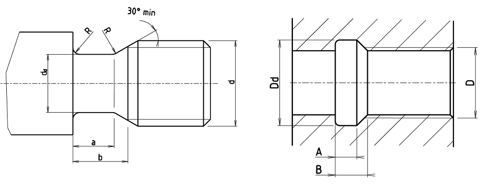

Thread undercuts
Numeric source awaits full verification against the current standard. Original values are retained; do not treat them as verified limits of size.

Thread undercuts · d_d h12/h13 – B_min N
| Pitch P [mm] | Thread | d_d h12/h13 | a_min | b_max | D_d H13 | A_max N | B_min N |
|---|---|---|---|---|---|---|---|
| 0.2 | M0.8 | d - 0.3 | 0.32 | 0.6 | D + 0.1 | 0.8 | 1.2 |
| 0.25 | M1; M1.2 | d - 0.4 | 0.4 | 0.75 | D + 0.1 | 1.0 | 1.4 |
| 0.3 | M1.4 | d - 0.5 | 0.5 | 0.9 | D + 0.1 | 1.2 | 1.6 |
| 0.35 | M1.6; M1.8 | d - 0.6 | 0.6 | 1.05 | D + 0.2 | 1.4 | 1.9 |
| 0.4 | M2 | d - 0.7 | 0.6 | 1.2 | D + 0.2 | 1.6 | 2.2 |
| 0.45 | M2.2; M2.5 | d - 0.7 | 0.7 | 1.35 | D + 0.2 | 1.8 | 2.4 |
| 0.5 | M3 | d - 0.8 | 0.8 | 1.5 | D + 0.3 | 2 | 2.7 |
| 0.6 | M3.5 | d - 1 | 0.9 | 1.8 | D + 0.3 | 2.4 | 3.3 |
| 0.7 | M4 | d - 1.1 | 1.1 | 2.1 | D + 0.3 | 2.8 | 3.8 |
| 0.75 | M4.5 | d - 1.2 | 1.2 | 2.25 | D + 0.3 | 3 | 4 |
| 0.8 | M5 | d - 1.3 | 1.3 | 2.4 | D + 0.3 | 3.2 | 4.2 |
| 1.0 | M6; M7 | d - 1.6 | 1.6 | 3 | D + 0.5 | 4 | 5.2 |
| 1.25 | M8 | d - 2 | 2 | 3.75 | D + 0.5 | 5 | 6.7 |
| 1.5 | M10 | d - 2.3 | 2.5 | 4.5 | D + 0.5 | 6 | 7.8 |
| 1.75 | M12 | d - 2.6 | 3 | 5.25 | D + 0.5 | 7 | 9.1 |
| 2 | M14; M16 | d - 3 | 3.4 | 6 | D + 0.5 | 8 | 10.3 |
| 2.5 | M18; M20; M22 | d - 3.6 | 4.4 | 7.5 | D + 0.5 | 10 | 13 |
| 3 | M24; M27 | d - 4.4 | 5.2 | 9 | D + 0.5 | 12 | 15.2 |
| 3.5 | M30; M33 | d - 5 | 6.2 | 10.5 | D + 0.5 | 14 | 17.7 |
| 4 | M36; M39 | d - 5.7 | 7 | 12 | D + 0.5 | 16 | 20 |
| 4.5 | M42; M45 | d - 6.4 | 8 | 13.5 | D + 0.5 | 18 | 23 |
| 5 | M48; M52 | d - 7 | 9 | 15 | D + 0.5 | 20 | 26 |
| 5.5 | M56; M60 | d - 7.7 | 11 | 17.5 | D + 0.5 | 22 | 28 |
| 6 | M64; M68 | d - 8.3 | 11 | 18 | D + 0.5 | 24 | 30 |
Thread undercuts · A_max S – R ≈ (D)
| Pitch P [mm] | Thread | A_max S | B_min S | R ≈ (d) | R ≈ (D) |
|---|---|---|---|---|---|
| 0.2 | M0.8 | 0.5 | 0.9 | 0.1 | 0.1 |
| 0.25 | M1; M1.2 | 0.6 | 1.0 | 0.12 | 0.12 |
| 0.3 | M1.4 | 0.75 | 1.2 | 0.16 | 0.16 |
| 0.35 | M1.6; M1.8 | 0.9 | 1.4 | 0.16 | 0.16 |
| 0.4 | M2 | 1 | 1.6 | 0.2 | 0.2 |
| 0.45 | M2.2; M2.5 | 1.1 | 1.7 | 0.2 | 0.2 |
| 0.5 | M3 | 1.25 | 2.0 | 0.2 | 0.2 |
| 0.6 | M3.5 | 1.5 | 2.4 | 0.4 | 0.4 |
| 0.7 | M4 | 1.75 | 2.75 | 0.4 | 0.4 |
| 0.75 | M4.5 | 1.9 | 2.9 | 0.4 | 0.4 |
| 0.8 | M5 | 2 | 3.0 | 0.4 | 0.4 |
| 1.0 | M6; M7 | 2.5 | 3.7 | 0.6 | 0.6 |
| 1.25 | M8 | 3.2 | 4.9 | 0.6 | 0.6 |
| 1.5 | M10 | 3.8 | 5.6 | 0.8 | 0.8 |
| 1.75 | M12 | 4.3 | 6.4 | 1 | 1 |
| 2 | M14; M16 | 5 | 7.3 | 1 | 1 |
| 2.5 | M18; M20; M22 | 6.3 | 9.3 | 1.2 | 1.2 |
| 3 | M24; M27 | 7.5 | 10.7 | 1.6 | 1.6 |
| 3.5 | M30; M33 | 9 | 12.7 | 1.6 | 1.6 |
| 4 | M36; M39 | 10 | 14.0 | 2 | 2 |
| 4.5 | M42; M45 | 11 | 16.0 | 2.5 | 2 |
| 5 | M48; M52 | 12.5 | 18.5 | 2.5 | 2.5 |
| 5.5 | M56; M60 | 14 | 20.0 | 3.2 | 3.2 |
| 6 | M64; M68 | 15 | 21.0 | 3.2 | 3.2 |
| Symbol | Meaning |
|---|---|
| P | Pitch P [mm] |
| D, d | Diameter [mm] |
Thread undercuts · d_d h12/h13 – B_min N
| Pitch P [mm] | Thread | d_d h12/h13 | a_min | b_max | D_d H13 | A_max N |
|---|---|---|---|---|---|---|
| 0.2 | M0.8 | d - 0.3 | 0.32 | 0.6 | D + 0.1 | 0.8 |
| 0.25 | M1; M1.2 | d - 0.4 | 0.4 | 0.75 | D + 0.1 | 1.0 |
| 0.3 | M1.4 | d - 0.5 | 0.5 | 0.9 | D + 0.1 | 1.2 |
| 0.35 | M1.6; M1.8 | d - 0.6 | 0.6 | 1.05 | D + 0.2 | 1.4 |
| 0.4 | M2 | d - 0.7 | 0.6 | 1.2 | D + 0.2 | 1.6 |
| 0.45 | M2.2; M2.5 | d - 0.7 | 0.7 | 1.35 | D + 0.2 | 1.8 |
| 0.5 | M3 | d - 0.8 | 0.8 | 1.5 | D + 0.3 | 2 |
| 0.6 | M3.5 | d - 1 | 0.9 | 1.8 | D + 0.3 | 2.4 |
| 0.7 | M4 | d - 1.1 | 1.1 | 2.1 | D + 0.3 | 2.8 |
| 0.75 | M4.5 | d - 1.2 | 1.2 | 2.25 | D + 0.3 | 3 |
| 0.8 | M5 | d - 1.3 | 1.3 | 2.4 | D + 0.3 | 3.2 |
| 1.0 | M6; M7 | d - 1.6 | 1.6 | 3 | D + 0.5 | 4 |
| 1.25 | M8 | d - 2 | 2 | 3.75 | D + 0.5 | 5 |
| 1.5 | M10 | d - 2.3 | 2.5 | 4.5 | D + 0.5 | 6 |
| 1.75 | M12 | d - 2.6 | 3 | 5.25 | D + 0.5 | 7 |
| 2 | M14; M16 | d - 3 | 3.4 | 6 | D + 0.5 | 8 |
| 2.5 | M18; M20; M22 | d - 3.6 | 4.4 | 7.5 | D + 0.5 | 10 |
| 3 | M24; M27 | d - 4.4 | 5.2 | 9 | D + 0.5 | 12 |
| 3.5 | M30; M33 | d - 5 | 6.2 | 10.5 | D + 0.5 | 14 |
| 4 | M36; M39 | d - 5.7 | 7 | 12 | D + 0.5 | 16 |
| 4.5 | M42; M45 | d - 6.4 | 8 | 13.5 | D + 0.5 | 18 |
| 5 | M48; M52 | d - 7 | 9 | 15 | D + 0.5 | 20 |
| 5.5 | M56; M60 | d - 7.7 | 11 | 17.5 | D + 0.5 | 22 |
| 6 | M64; M68 | d - 8.3 | 11 | 18 | D + 0.5 | 24 |
Thread undercuts · d_d h12/h13 – B_min N
| Pitch P [mm] | B_min N |
|---|---|
| 0.2 | 1.2 |
| 0.25 | 1.4 |
| 0.3 | 1.6 |
| 0.35 | 1.9 |
| 0.4 | 2.2 |
| 0.45 | 2.4 |
| 0.5 | 2.7 |
| 0.6 | 3.3 |
| 0.7 | 3.8 |
| 0.75 | 4 |
| 0.8 | 4.2 |
| 1.0 | 5.2 |
| 1.25 | 6.7 |
| 1.5 | 7.8 |
| 1.75 | 9.1 |
| 2 | 10.3 |
| 2.5 | 13 |
| 3 | 15.2 |
| 3.5 | 17.7 |
| 4 | 20 |
| 4.5 | 23 |
| 5 | 26 |
| 5.5 | 28 |
| 6 | 30 |
Thread undercuts · A_max S – R ≈ (D)
| Pitch P [mm] | Thread | A_max S | B_min S | R ≈ (d) | R ≈ (D) |
|---|---|---|---|---|---|
| 0.2 | M0.8 | 0.5 | 0.9 | 0.1 | 0.1 |
| 0.25 | M1; M1.2 | 0.6 | 1.0 | 0.12 | 0.12 |
| 0.3 | M1.4 | 0.75 | 1.2 | 0.16 | 0.16 |
| 0.35 | M1.6; M1.8 | 0.9 | 1.4 | 0.16 | 0.16 |
| 0.4 | M2 | 1 | 1.6 | 0.2 | 0.2 |
| 0.45 | M2.2; M2.5 | 1.1 | 1.7 | 0.2 | 0.2 |
| 0.5 | M3 | 1.25 | 2.0 | 0.2 | 0.2 |
| 0.6 | M3.5 | 1.5 | 2.4 | 0.4 | 0.4 |
| 0.7 | M4 | 1.75 | 2.75 | 0.4 | 0.4 |
| 0.75 | M4.5 | 1.9 | 2.9 | 0.4 | 0.4 |
| 0.8 | M5 | 2 | 3.0 | 0.4 | 0.4 |
| 1.0 | M6; M7 | 2.5 | 3.7 | 0.6 | 0.6 |
| 1.25 | M8 | 3.2 | 4.9 | 0.6 | 0.6 |
| 1.5 | M10 | 3.8 | 5.6 | 0.8 | 0.8 |
| 1.75 | M12 | 4.3 | 6.4 | 1 | 1 |
| 2 | M14; M16 | 5 | 7.3 | 1 | 1 |
| 2.5 | M18; M20; M22 | 6.3 | 9.3 | 1.2 | 1.2 |
| 3 | M24; M27 | 7.5 | 10.7 | 1.6 | 1.6 |
| 3.5 | M30; M33 | 9 | 12.7 | 1.6 | 1.6 |
| 4 | M36; M39 | 10 | 14.0 | 2 | 2 |
| 4.5 | M42; M45 | 11 | 16.0 | 2.5 | 2 |
| 5 | M48; M52 | 12.5 | 18.5 | 2.5 | 2.5 |
| 5.5 | M56; M60 | 14 | 20.0 | 3.2 | 3.2 |
| 6 | M64; M68 | 15 | 21.0 | 3.2 | 3.2 |
| Symbol | Meaning |
|---|---|
| P | Pitch P [mm] |
| D, d | Diameter [mm] |